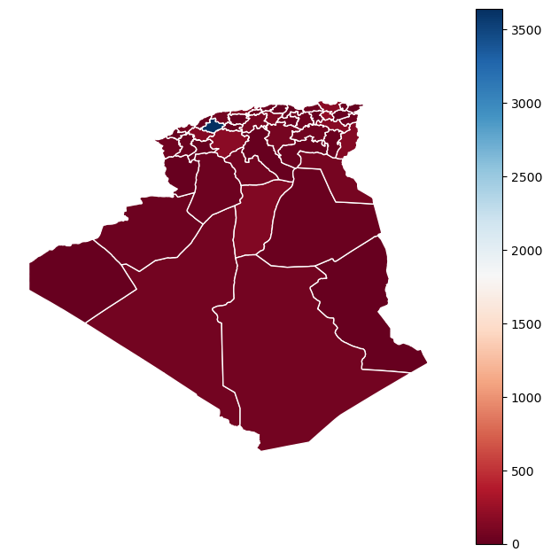

import numpy as np
import matplotlib.pyplot as plt
import pandas as pddf = pd.read_excel("Table60.xlsx")
df.info()<class 'pandas.core.frame.DataFrame'>
RangeIndex: 48 entries, 0 to 47
Data columns (total 6 columns):
# Column Non-Null Count Dtype
--- ------ -------------- -----
0 Wilaya 48 non-null object
1 1966 48 non-null float64
2 1977 48 non-null float64
3 1987 48 non-null float64
4 1998 48 non-null float64
5 2008 48 non-null float64
dtypes: float64(5), object(1)
memory usage: 2.4+ KBimport geopandas as gpd
import matplotlib.pyplot as plt
tracts = gpd.read_file("converted_shape.csv")
print('Observations, Attributes:',tracts.shape)
# tracts["ADM1"] = df.sort_values("Wilaya")["Wilaya"]
# tracts = tracts.merge(df, left_on = "ADM1", right_on= "Wilaya")
tracts--------------------------------------------------------------------------- ValueError Traceback (most recent call last) ~\AppData\Local\Temp/ipykernel_10188/282596048.py in <module> 2 import matplotlib.pyplot as plt 3 ----> 4 tracts = gpd.read_file("converted_shape.csv") 5 print('Observations, Attributes:',tracts.shape) 6 # tracts["ADM1"] = df.sort_values("Wilaya")["Wilaya"] ~\anaconda3\lib\site-packages\geopandas\io\file.py in _read_file(filename, bbox, mask, rows, **kwargs) 242 ) 243 --> 244 return GeoDataFrame.from_features( 245 f_filt, crs=crs, columns=columns + ["geometry"] 246 ) ~\anaconda3\lib\site-packages\geopandas\geodataframe.py in from_features(cls, features, crs, columns) 608 row.update(feature["properties"]) 609 rows.append(row) --> 610 return GeoDataFrame(rows, columns=columns, crs=crs) 611 612 @classmethod ~\anaconda3\lib\site-packages\geopandas\geodataframe.py in __init__(self, data, geometry, crs, *args, **kwargs) 146 # by pandas internals trying to access this 147 if (self.columns == "geometry").sum() > 1: --> 148 raise ValueError( 149 "GeoDataFrame does not support multiple columns " 150 "using the geometry column name 'geometry'." ValueError: GeoDataFrame does not support multiple columns using the geometry column name 'geometry'.
tracts.columnsIndex([ 'ID', 'LBL', 'FIP', 'MMT_ID', 'SHORT__FRM',
'LONG_FRM', 'ADM0', 'ADM1', 'ADM2', 'ADM3',
'ADM4', 'ADM5', 'STL-0', 'STL-1', 'STL-2',
'STL-3', 'STL-4', 'STL-5', 'geometry', 'Wilaya',
1966, 1977, 1987, 1998, 2008],
dtype='object')fig, ax = plt.subplots(figsize = (8, 8), dpi = 100)
tracts.plot(column=1966, cmap='RdBu', edgecolor='w', legend=True, ax = ax)
ax.set_axis_off()
tracts = gpd.GeoDataFrame.from_file(r"D:\\OneDrive - ensmm-annaba.dz\\Algeria Statistics\\Algeria Shapefiles\\earthworks.stanford.edu\\ALG.shp", encoding="utf-8")
print('Observations, Attributes:',tracts.shape)
tracts.columnsObservations, Attributes: (48, 19)Index(['ID', 'LBL', 'FIP', 'MMT_ID', 'SHORT__FRM', 'LONG_FRM', 'ADM0', 'ADM1',
'ADM2', 'ADM3', 'ADM4', 'ADM5', 'STL-0', 'STL-1', 'STL-2', 'STL-3',
'STL-4', 'STL-5', 'geometry'],
dtype='object')tracts.drop(["LBL", "FIP", "MMT_ID", "SHORT__FRM", "LONG_FRM", "ADM0", "ADM2", "ADM3", "ADM4", "ADM5"], axis = 1)
tracts.to_csv("converted_shape.csv")